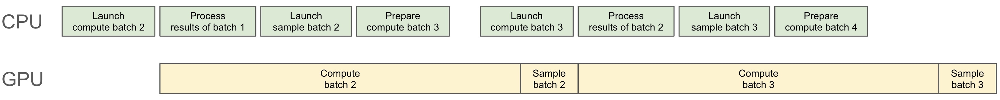
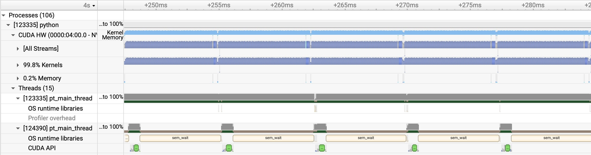
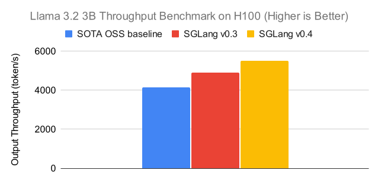
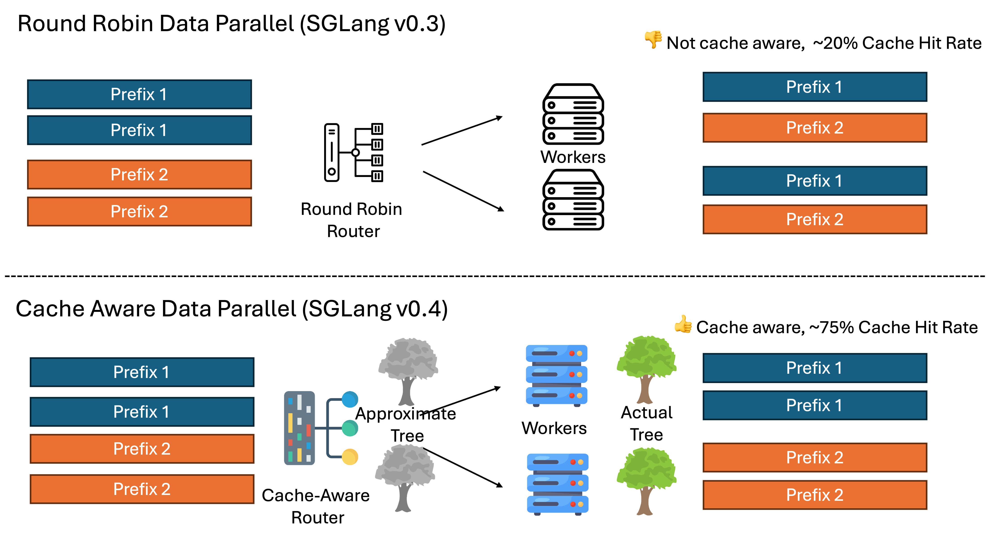
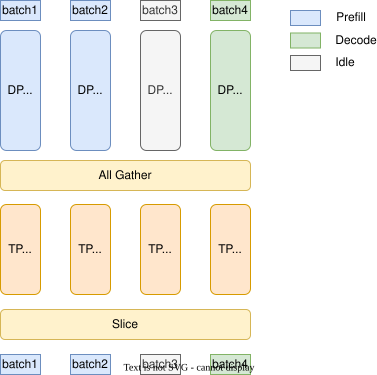
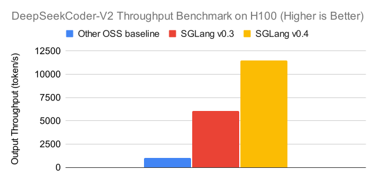

SGLang v0.4: Zero‑Overhead Batch Scheduler, Cache‑Aware Load Balancer, Faster Structured Outputs
On this page
We’re excited to release SGLang v0.4, featuring significant performance improvements and new features:
- Zero-overhead batch scheduler: 1.1x increase in throughput.
- Cache-aware load balancer: up to 1.9x increase in throughput with 3.8x higher cache hit rate.
- Data parallelism attention for DeepSeek models: up to 1.9x decoding throughput improvement.
- Fast structured outputs with xgrammar: up to 10x faster.
This blog provides a walkthrough of these updates. We welcome your feedback and contributions!
Zero-Overhead Batch Scheduler
While LLM inference runs on GPUs, there is substantial work that also needs to be done by the CPU, such as batch scheduling, memory allocation, and prefix matching. An unoptimized inference engine can spend as much as half of its time on CPU overhead. SGLang has been known for its efficient batch scheduler from the start. In this new version, we pushed it to the extreme and achieved a near zero-overhead batch scheduler. This idea is simple and has been proposed in NanoFlow. Basically, we can overlap the CPU scheduling with the GPU computation. The scheduler runs one batch ahead and prepares all the metadata required for the next batch. By doing this, we can keep the GPUs always busy and hide expensive overheads such as the radix cache operations. The related code is here. The implementation details involve resolving dependencies by creating future tokens and carefully scheduling CUDA events and synchronization. Below is an illustration of the overlapped CPU scheduler and GPU worker.

We verified the zero-overhead claim by using the Nsight profiling system. In the figure below, there are 5 consecutive decoding batches, and you can see there is no single idle time on the GPU. (NOTE: This profile is obtained with the Triton attention backend; there is still a minor gap with the FlashInfer backend, which will be resolved in the next FlashInfer release.)

With this optimization, SGLang v0.4 can now squeeze the last bit of performance from the GPU and achieves a 1.1x speedup against its previous version and a 1.3x speedup against other state-of-the-art baselines. The speedup is most significant on small models and large tensor parallelism sizes.

Usage: It is turned on by default, so you do not need to change anything!
Reproduce benchmark:
# zero-overhead batch scheduler (v0.4)
python3 -m sglang.launch_server --model meta-llama/Llama-3.2-3B-Instruct
python3 -m sglang.bench_serving --backend sglang --dataset-name random --num-prompts 500 --random-input 4096 --random-output 2048
# old batch scheduler (v0.3)
python3 -m sglang.launch_server --model meta-llama/Llama-3.2-3B-Instruct --disable-overlap
python3 -m sglang.bench_serving --backend sglang --dataset-name random --num-prompts 500 --random-input 4096 --random-output 2048Cache-Aware Load Balancer
SGLang v0.4 introduces a cache-aware load balancer for LLM inference engines. The load balancer predicts prefix KV cache hit rates on workers and selects those with the highest match rates. Testing shows a up to 1.9x throughput increase and 3.8x hit rate improvement, with benefits scaling as worker count increases. The figure below shows how a cache-aware load balancer is different from a naive round-robin load balancer for data parallelism. The cache-aware load balancer maintains an approximate radix tree of the actual radix tree on the workers. The tree is lazily updated with almost no overhead.

Here are some benchmark results. The new cache-aware router significantly improves throughput.
| SGLang v0.3 | SGLang v0.4 | |
|---|---|---|
| Throughput (token/s) | 82665 | 158596 |
| Cache hit rate | 20% | 75% |
The benchmark is conducted on a workload that has multiple long prefix groups, and each group is perfectly balanced. The performance might vary based on the characteristics of the workload, but it should improve the cache hit rate significantly
The key features of this router includes
- Multi-Node Support: Deploy workers across multiple machines, connect a single router to distributed workers, allowing for easy horizontal scaling while preserving cache awareness in a distributed setup.
- Cache-Aware Routing: Requests are sent to workers with a higher hit rate, and load balancing is performed to avoid imbalance.
- Communication-Free Design: No worker synchronization is required for cache state; instead, it uses passed information to simulate an “approximate tree”.
- High-Performance Implementation: Built in pure Rust for high concurrency, with a low overhead design, offering a 2x speedup compared to Python-based alternatives.
- Standalone Package: Published as “sglang-router”, includes Python bindings, and features a CLI interface for easy usage.
Usage
Installation:
pip install sglang-router- Co-launch Workers and Router
Drop-in replacement for existing --dp-size parameter:
python -m sglang_router.launch_server \
--model-path meta-llama/Meta-Llama-3.1-8B-Instruct \
--dp-size 8- Router-Only Launch Ideal for multi-node distributed processing:
python -m sglang_router.launch_router \
--worker-urls http://worker1:8000 http://worker2:8000Reproduce benchmark:
# Hardware: 8x A100 80GB GPUs
# Run benchmark
python bench_serving.py \
--host 127.0.0.1 \
--port 30000 \
--dataset-name generated-shared-prefix
# Launch with router
python -m sglang_router.launch_server \
--model-path meta-llama/Meta-Llama-3.1-8B-Instruct \
--dp-size 8
# Launch without router (baseline)
python -m sglang.launch_server \
--model-path meta-llama/Meta-Llama-3.1-8B-Instruct \
--dp-size 8Learn more by reading the deep dive thread. There is also a related paper (with a different design and implementation), Preble, which is also built on top of SGLang.
Data Parallelism Attention For DeepSeek Models
The most common parallelism strategy for inference is tensor parallelism. However, it might not be the most efficient strategy for certain models. For example, DeepSeek models use MLA and only have one KV head. If we use tensor parallelism on 8 GPUs, it will lead to duplicated KV cache and unwanted memory usage.
To overcome this, we’ve implemented data parallelism (DP) for the multi-head latent attention (MLA) mechanism to improve throughput for DeepSeek models. By adopting DP for the attention component, the KV cache is significantly reduced, allowing for larger batch sizes. In our DP attention implementation, each DP worker handles different types of batches (prefill, decode, idle) independently. The attention-processed data will be all-gathered among all workers before entering the Mixture-of-Experts (MoE) layer, and after processing through the MoE, the data will be redistributed back to each worker. The figure below illustrates this idea.

Here are the benchmark results on 8 x H100 80GB GPUs. With this optimization, SGLang v0.4 achieved 1.9x decoding throughput compared to SGLang v0.3. We are working on further improving the throughput by integrating expert parallelism for the MoE layers. You can check out the related PRs for data parallelism and expert parallelism.

Usage: Add --enable-dp-attention option
to turn on this feature. Currently, it’s only supported for DeepSeek
models.
Reproduce benchmark:
# Hardware: 8x H100 80GB GPUs
# If you see out-of-memory, please try to reduce `--mem-fraction-static` to a smaller value such as 0.75.
# SGLang w/ DP attention (v0.4)
python3 -m sglang.launch_server --model-path neuralmagic/DeepSeek-Coder-V2-Instruct-FP8 --disable-radix-cache --trust-remote-code --tp 8 --enable-dp-attention --mem-fraction-static 0.78
python3 -m sglang.bench_serving --backend sglang --dataset-name random --random-input 1 --random-output 512 --random-range-ratio 1 --num-prompts 10000
# SGLang w/o DP attention (v0.3)
python3 -m sglang.launch_server --model-path neuralmagic/DeepSeek-Coder-V2-Instruct-FP8 --disable-radix-cache --trust-remote-code --tp 8 --mem-fraction-static 0.78
python3 -m sglang.bench_serving --backend sglang --dataset-name random --random-input 1 --random-output 512 --random-range-ratio 1 --num-prompts 10000Fast Structured Outputs with XGrammar
SGLang has been the fastest inference engine for JSON decoding with
its Compressed
Finite State Machine. With this new release, it becomes even faster
by integrating a faster grammar backend, xgrammar.
According to the benchmark results, SGLang + xgrammar can be up
to 10x faster than other open-source solutions for JSON decoding
tasks. You can learn more in the xgrammar blog post:
https://blog.mlc.ai/2024/11/22/achieving-efficient-flexible-portable-structured-generation-with-xgrammar.
Usage: Add `--grammar-backend xgrammar` when launching the server.
python3 -m sglang.launch_server --model-path meta-llama/Llama-3.1-8B-Instruct --grammar-backend xgrammarYou can then query it with the OpenAI-compatible API. See an example at https://sgl-project.github.io/backend/openai_api_completions.html#JSON.
Acknowledgment
The work in this blog post is mainly contributed by Byron Hsu, Ke Bao, Lianmin Zheng, Yineng Zhang, and Ziyi Xu. We thank Zhiqiang Xie, Liangsheng Yin, Shuo Yang, and Yilong Zhao for their discussions on the zero-overhead scheduler; Ying Sheng, Yichuan Wang, and Shiyi Cao for their discussions on the cache-aware load balancer; Jiashi Li for their discussion on data parallelism attention; and Yixin Dong for the amazing xgrammar library.
Roadmap
It has been a great year, and we delivered many features following our roadmap. The community is also growing healthily with more developers and adoption. The focus of the next release will be on disaggregated prefill-decode, speculative decoding, multi-level radix cache, sequence parallelism, and more!